| 1461279 | 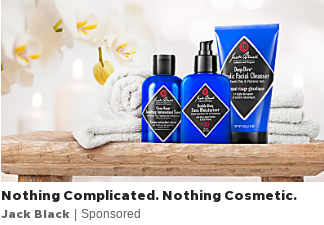 | 4.30 | | good_design | 0.400 | | boring | 0.300 | | deceptive | 0.200 | | dislike_product | 0.200 | | like_product | 0.200 | | simple | 0.200 | | bad_design | 0.100 | | distasteful | 0.100 | | entertaining | 0.100 |
| | | | - The photo itself looks fake.
- not enough information
|
| 1461495 | | 4.50 | | good_design | 0.400 | | simple | 0.400 | | useful | 0.300 | | boring | 0.200 | | dislike_product | 0.200 | | entertaining | 0.200 | | like_product | 0.200 | | trustworthy | 0.200 | | unclear | 0.200 | | deceptive | 0.100 | | politicized | 0.100 |
| | | | |
| 1461515 | 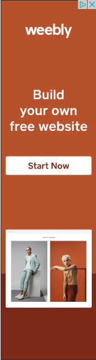 | 3.70 | | simple | 0.700 | | bad_design | 0.600 | | boring | 0.500 | | unclear | 0.200 | | deceptive | 0.100 | | dislike_product | 0.100 | | good_design | 0.100 | | like_product | 0.100 | | useful | 0.100 |
| | | | |
| 1461542 | 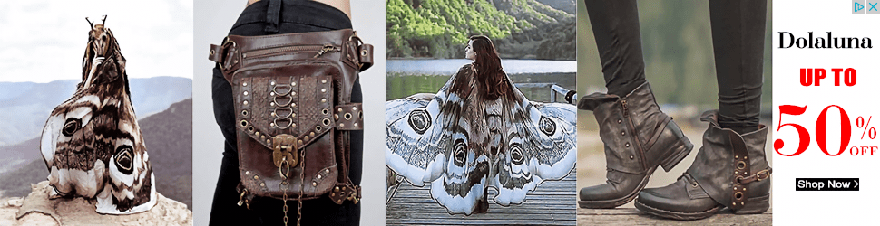 | 4.30 | | dislike_product | 0.600 | | bad_design | 0.400 | | good_design | 0.300 | | boring | 0.200 | | deceptive | 0.200 | | entertaining | 0.200 | | like_product | 0.200 | | simple | 0.200 | | unclear | 0.100 |
| | | | - Just not my style.
- I have no idea what the product is
|
| 1461550 | | 4.30 | | boring | 0.500 | | good_design | 0.400 | | like_product | 0.400 | | bad_design | 0.300 | | dislike_product | 0.300 | | simple | 0.300 | | deceptive | 0.100 | | distasteful | 0.100 | | entertaining | 0.100 | | unclear | 0.100 | | useful | 0.100 |
| | | | - The women should not be lifting her top to show her stomach. This prevents us from seeing how the shirt falls naturally on her body.
|
| 1461573 | | 3.50 | | boring | 0.400 | | simple | 0.400 | | bad_design | 0.300 | | dislike_product | 0.200 | | clickbait | 0.100 | | deceptive | 0.100 | | distasteful | 0.100 | | manipulative | 0.100 | | trustworthy | 0.100 | | unclear | 0.100 | | useful | 0.100 |
| - Computer Security-related
| | | |
| 1461795 | 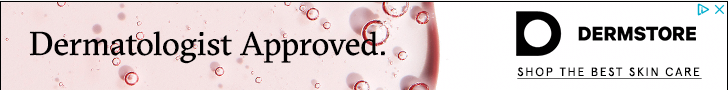 | 3.80 | | bad_design | 0.300 | | boring | 0.300 | | deceptive | 0.300 | | good_design | 0.300 | | simple | 0.300 | | trustworthy | 0.300 | | dislike_product | 0.200 | | clickbait | 0.100 | | unclear | 0.100 | | useful | 0.100 |
| | | | - Just kind of blah. It's not a bad ad, but it's not really a good one.
|
| 1461810 |  | 4.30 | | simple | 0.700 | | dislike_product | 0.400 | | bad_design | 0.100 | | boring | 0.100 | | clickbait | 0.100 | | deceptive | 0.100 | | like_product | 0.100 | | trustworthy | 0.100 | | useful | 0.100 |
| | | | - No
- No, there are no other reasons.
- I used weebly before i believe. it's good
|
| 1461828 | | 3.80 | | dislike_product | 0.500 | | boring | 0.300 | | simple | 0.300 | | useful | 0.200 | | bad_design | 0.100 | | clickbait | 0.100 | | deceptive | 0.100 | | entertaining | 0.100 | | good_design | 0.100 | | like_product | 0.100 | | manipulative | 0.100 |
| | | | |
| 1461830 | | 3.60 | | bad_design | 0.400 | | simple | 0.400 | | boring | 0.300 | | good_design | 0.200 | | clickbait | 0.100 | | dislike_product | 0.100 | | entertaining | 0.100 | | manipulative | 0.100 | | trustworthy | 0.100 |
| | | | |
| 1461990 | | 3.90 | | simple | 0.500 | | unclear | 0.400 | | bad_design | 0.300 | | boring | 0.300 | | good_design | 0.300 | | dislike_product | 0.200 | | clickbait | 0.100 | | deceptive | 0.100 | | like_product | 0.100 |
| | | | - There are so many more interesting pictures that they could have taken to promote this company.
|
| 1462434 | 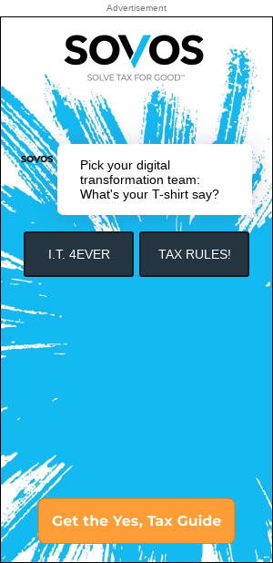 | 3.10 | | unclear | 0.600 | | dislike_product | 0.400 | | simple | 0.400 | | bad_design | 0.300 | | boring | 0.300 | | deceptive | 0.300 | | good_design | 0.300 | | clickbait | 0.200 | | politicized | 0.200 | | useful | 0.200 | | manipulative | 0.100 | | trustworthy | 0.100 |
| | | | - I have no clue what product or service this is trying to sell. It mentions T-Shirts and then a tax guide?
- The big gap make sit hard to read / understand the purpose of the ad but it looks cool.
|
| 1462723 | 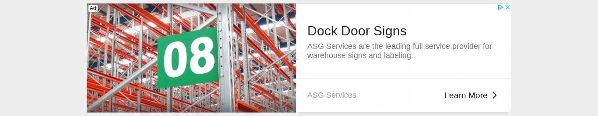 | 3.60 | | boring | 0.600 | | simple | 0.500 | | useful | 0.200 | | bad_design | 0.100 | | dislike_product | 0.100 | | entertaining | 0.100 | | good_design | 0.100 | | like_product | 0.100 | | trustworthy | 0.100 | | unclear | 0.100 |
| | | | - Its a basic ad
- The banner is too large.
|
| 1462728 | | 3.82 | | simple | 0.545 | | boring | 0.273 | | good_design | 0.273 | | bad_design | 0.182 | | like_product | 0.182 | | unclear | 0.182 | | dislike_product | 0.0909 | | distasteful | 0.0909 | | politicized | 0.0909 | | trustworthy | 0.0909 |
| | | | |
| 1462850 | 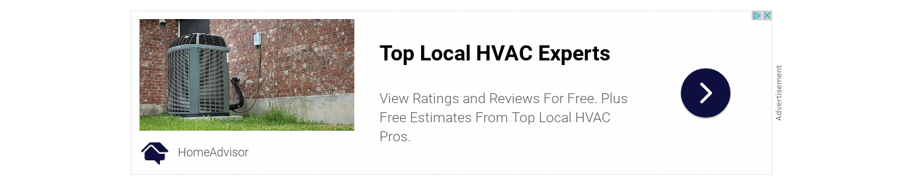 | 3.60 | | boring | 0.500 | | simple | 0.400 | | bad_design | 0.200 | | useful | 0.200 | | dislike_product | 0.100 | | distasteful | 0.100 | | good_design | 0.100 | | unclear | 0.100 |
| | | | |
| 1463254 | 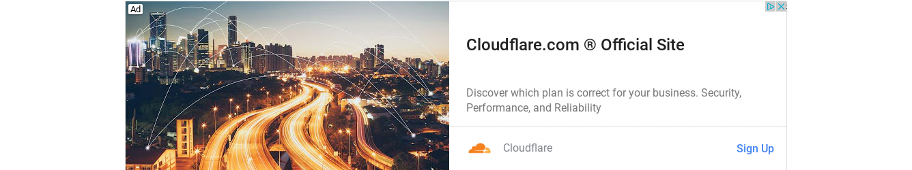 | 3.82 | | good_design | 0.455 | | boring | 0.364 | | unclear | 0.364 | | simple | 0.273 | | bad_design | 0.182 | | dislike_product | 0.182 | | clickbait | 0.0909 | | deceptive | 0.0909 | | entertaining | 0.0909 | | like_product | 0.0909 | | manipulative | 0.0909 | | trustworthy | 0.0909 |
| | | | - The ad doesn't apply to me and it just looks like it's trying to sell me something.
- I think the picture was somewhat lacking and could have used icons representing devices and whatnot.
- Ad is confusing
|
| 1463396 | | 3.36 | | boring | 0.455 | | dislike_product | 0.364 | | good_design | 0.364 | | simple | 0.364 | | bad_design | 0.273 | | deceptive | 0.273 | | like_product | 0.182 | | clickbait | 0.0909 | | manipulative | 0.0909 | | trustworthy | 0.0909 | | unclear | 0.0909 | | useful | 0.0909 |
| | | | - This ad sticks out like a sore thumb, especially on that website.
- I love how nostalgic the ad looks. Maybe it's just me, but the ad reminds me of how they used to look when I first getting on the internet in 2007. I see this nostalgic quality as something positive because I have good memories around that time.
|
| 1463785 |  | 3.30 | | unclear | 0.600 | | boring | 0.400 | | good_design | 0.300 | | bad_design | 0.200 | | distasteful | 0.200 | | simple | 0.200 | | dislike_product | 0.100 | | like_product | 0.100 |
| | | | - I honestly just don't know what is being advertised. Is it a clothing store. The uncertainty makes me forget it instantly.
|
| 1463806 | | 3.40 | | good_design | 0.500 | | bad_design | 0.400 | | unclear | 0.400 | | boring | 0.300 | | dislike_product | 0.200 | | simple | 0.200 | | clickbait | 0.100 | | distasteful | 0.100 | | manipulative | 0.100 | | trustworthy | 0.100 |
| | | | - I don't even know what this is suppose to be
- This ad is intrusive because it is an annoying pop up.
|
| 1463810 | | 3.58 | | unclear | 0.500 | | boring | 0.417 | | simple | 0.417 | | deceptive | 0.250 | | good_design | 0.250 | | bad_design | 0.0833 | | dislike_product | 0.0833 | | like_product | 0.0833 | | manipulative | 0.0833 | | trustworthy | 0.0833 |
| - B2B Products
- Computer Security-related
| | | - There's no way on the planet or in the Internet that IT doesn't still get involved in this software and in remote workers in general. I call negligence or BS.
|
| 1463952 | 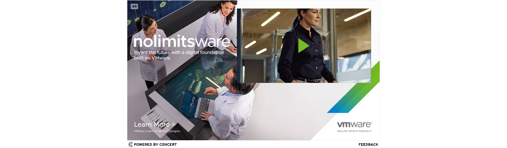 | 4.20 | | unclear | 0.600 | | bad_design | 0.400 | | boring | 0.400 | | good_design | 0.400 | | simple | 0.300 | | entertaining | 0.200 | | trustworthy | 0.200 | | like_product | 0.100 | | useful | 0.100 |
| | | | |
| 1463962 | | 3.50 | | boring | 0.500 | | simple | 0.500 | | good_design | 0.400 | | unclear | 0.300 | | trustworthy | 0.200 | | bad_design | 0.100 | | clickbait | 0.100 | | dislike_product | 0.100 |
| | | | - Bad grammar (e.g. “at online at Jackrabbit”)
- Not interested in product
|
| 1463986 | | 3.20 | | unclear | 0.600 | | boring | 0.500 | | deceptive | 0.200 | | clickbait | 0.100 | | good_design | 0.100 | | like_product | 0.100 | | politicized | 0.100 | | simple | 0.100 | | trustworthy | 0.100 | | useful | 0.100 |
| - B2B Products
- Computer Security-related
| | | - I literally have no idea what the advertisement is for.
|
| 1464539 | | 3.80 | | simple | 0.400 | | unclear | 0.400 | | deceptive | 0.300 | | good_design | 0.300 | | bad_design | 0.200 | | dislike_product | 0.200 | | like_product | 0.200 | | manipulative | 0.200 | | boring | 0.100 | | clickbait | 0.100 | | distasteful | 0.100 | | entertaining | 0.100 | | useful | 0.100 |
| - Computer Security-related
- Software Download
| | | |
| 1464793 | | 3.90 | | boring | 0.400 | | unclear | 0.400 | | bad_design | 0.300 | | dislike_product | 0.300 | | simple | 0.300 | | clickbait | 0.100 | | good_design | 0.100 | | like_product | 0.100 | | manipulative | 0.100 | | trustworthy | 0.100 | | useful | 0.100 |
| | | | |
| 1465103 | 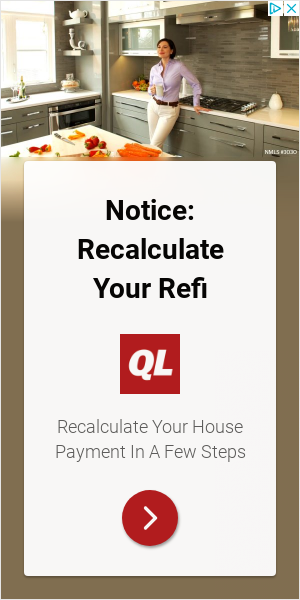 | 4.40 | | simple | 0.700 | | boring | 0.400 | | dislike_product | 0.300 | | unclear | 0.300 | | clickbait | 0.200 | | good_design | 0.200 | | distasteful | 0.100 | | manipulative | 0.100 |
| | | | - Nope!
- Wasted empty space and the image is lost in ad.
- I am not really interested in the topic, so I am indifferent.
|
| 1465385 | 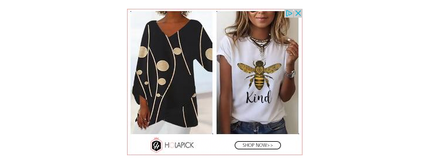 | 3.90 | | boring | 0.500 | | simple | 0.400 | | like_product | 0.300 | | unclear | 0.300 | | dislike_product | 0.200 | | good_design | 0.200 | | bad_design | 0.100 | | deceptive | 0.100 |
| | | | - The product itself doesn't appeal to me.
- Don't care about fashion and I am not a female.
|
| 1465493 | | 3.36 | | boring | 0.455 | | good_design | 0.455 | | simple | 0.364 | | dislike_product | 0.273 | | trustworthy | 0.273 | | entertaining | 0.182 | | manipulative | 0.182 | | unclear | 0.182 | | clickbait | 0.0909 | | politicized | 0.0909 | | useful | 0.0909 |
| | | | |
| 1465912 | | 4.60 | | boring | 0.400 | | good_design | 0.400 | | simple | 0.400 | | bad_design | 0.100 | | clickbait | 0.100 | | dislike_product | 0.100 | | entertaining | 0.100 | | politicized | 0.100 | | unclear | 0.100 | | useful | 0.100 |
| | | | - It is not as intrusive as many other ads I see online
|
| 1466220 | | 3.90 | | dislike_product | 0.500 | | boring | 0.400 | | bad_design | 0.200 | | useful | 0.200 | | deceptive | 0.100 | | entertaining | 0.100 | | good_design | 0.100 | | like_product | 0.100 | | simple | 0.100 | | unclear | 0.100 |
| | | | |
| 1466565 | | 4.30 | | good_design | 0.500 | | simple | 0.500 | | bad_design | 0.300 | | dislike_product | 0.300 | | like_product | 0.300 | | unclear | 0.300 | | clickbait | 0.200 | | boring | 0.100 | | deceptive | 0.100 | | distasteful | 0.100 | | entertaining | 0.100 |
| | | | - It's simple and straight forward in that obviously, it's about some sort of vacation in the Bahamas and hotels. But it's unclear in that it doesn't say much... though the picture does say a lot.
- I don't like seeing ads with scantily clad women.
- Bad taste to advertise travel during a pandemic.
|
| 1466575 | 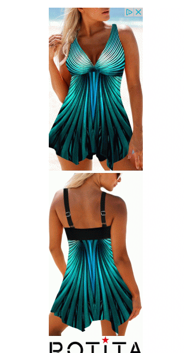 | 3.40 | | bad_design | 0.600 | | boring | 0.300 | | clickbait | 0.300 | | good_design | 0.300 | | unclear | 0.200 | | useful | 0.200 | | deceptive | 0.100 | | dislike_product | 0.100 | | entertaining | 0.100 | | like_product | 0.100 | | simple | 0.100 | | trustworthy | 0.100 |
| | | | - Is this a clothing brand? A fabric brand? An online something or other?
- I like that it fully displays the product but I think the design is tacky
|
| 1466632 | | 4.30 | | like_product | 0.400 | | simple | 0.400 | | boring | 0.300 | | unclear | 0.300 | | useful | 0.300 | | bad_design | 0.200 | | clickbait | 0.200 | | deceptive | 0.100 | | dislike_product | 0.100 | | politicized | 0.100 | | trustworthy | 0.100 |
| | | | - I'm not really sure if hitting the play button in the corner would play the video in the ad or if it'll take me to the Dell website where the video plays there.
|
| 1466795 | | 2.90 | | boring | 0.800 | | unclear | 0.600 | | dislike_product | 0.300 | | good_design | 0.300 | | clickbait | 0.200 | | deceptive | 0.200 | | bad_design | 0.100 | | simple | 0.100 |
| | | | - This IS clickbait, though it's not STRONG clickbait, if that makes sense. But it's not clearly defined as an ad - I might have thought it was a real article by journalists.
- image has nothing to do with product
- I don't care about document management.
- Why would I want to download a file from a Site that I never heard of.
|
| 1466855 | | 3.80 | | boring | 0.400 | | good_design | 0.400 | | simple | 0.300 | | unclear | 0.300 | | bad_design | 0.200 | | like_product | 0.200 | | clickbait | 0.100 | | deceptive | 0.100 | | dislike_product | 0.100 | | trustworthy | 0.100 |
| - B2B Products
- Consumer Tech
- Self-Link
| | | - I don't feel like I fully understand the purpose or uses of the product. It would've been nice if the ad featured examples of the flight tracker being used in its intended contexts.
- I really dont know what it's for I can guess
|
| 1467012 | | 3.20 | | simple | 0.700 | | boring | 0.300 | | bad_design | 0.200 | | good_design | 0.200 | | useful | 0.200 | | deceptive | 0.100 | | dislike_product | 0.100 | | distasteful | 0.100 | | manipulative | 0.100 |
| | | | - looks to be using a 3rd party service instead of embedding the ad in the web page.
- Doesn't make a case for its product
- Money related--it feels like they want my money even though this is just opening an account which I have no interest in doing.
- Why would I want to buy a cd, so the bank could get credit for donating the interest earned from it? If I want to donate the interest, I'll do it myself, to charities that I choose.
|
| 1467135 | 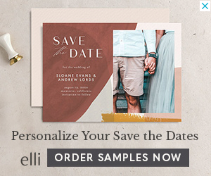 | 3.80 | | good_design | 0.400 | | simple | 0.400 | | boring | 0.300 | | unclear | 0.300 | | bad_design | 0.200 | | dislike_product | 0.200 | | entertaining | 0.200 | | deceptive | 0.100 | | like_product | 0.100 | | trustworthy | 0.100 |
| | | | |
| 1467175 | 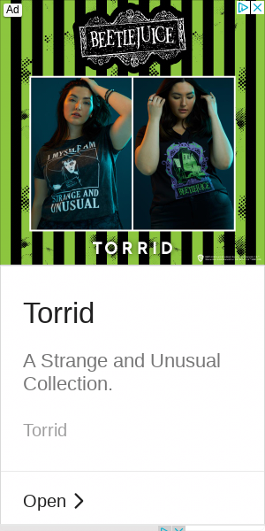 | 3.30 | | boring | 0.700 | | dislike_product | 0.400 | | unclear | 0.400 | | good_design | 0.300 | | bad_design | 0.100 | | clickbait | 0.100 | | deceptive | 0.100 | | entertaining | 0.100 | | like_product | 0.100 | | simple | 0.100 | | trustworthy | 0.100 |
| | | | |
| 1467474 | | 4.10 | | simple | 0.600 | | good_design | 0.400 | | boring | 0.300 | | unclear | 0.300 | | dislike_product | 0.200 | | bad_design | 0.100 | | deceptive | 0.100 | | like_product | 0.100 | | manipulative | 0.100 | | trustworthy | 0.100 | | useful | 0.100 |
| | | | - Well i hard people have bad experience with this company
|
| 1467892 | 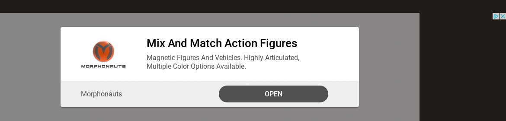 | 3.30 | | boring | 0.700 | | bad_design | 0.500 | | dislike_product | 0.300 | | simple | 0.300 | | like_product | 0.200 | | unclear | 0.200 | | clickbait | 0.100 | | deceptive | 0.100 | | good_design | 0.100 |
| | | | - Not exactly sure what open means, or why its needed.
- No, there are no other reasons.
- No
- If you are going to make an ad about a toy you really need to show the toy in the ad, Because I would not have read the text if this was not for a survey.
|
| 1468028 | | 3.80 | | unclear | 0.600 | | boring | 0.300 | | good_design | 0.300 | | simple | 0.200 | | bad_design | 0.100 | | dislike_product | 0.100 | | entertaining | 0.100 | | like_product | 0.100 | | trustworthy | 0.100 | | useful | 0.100 |
| | | | |
| 1468087 | 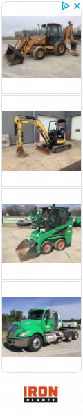 | 3.70 | | dislike_product | 0.500 | | unclear | 0.400 | | boring | 0.300 | | simple | 0.300 | | bad_design | 0.200 | | good_design | 0.200 | | deceptive | 0.100 | | entertaining | 0.100 | | useful | 0.100 |
| | | | - It's barely large enough to see the pictures, and it's impossible to read the text.
- Just cant grasp if they are selling trucks or what?
|
| 1468330 | 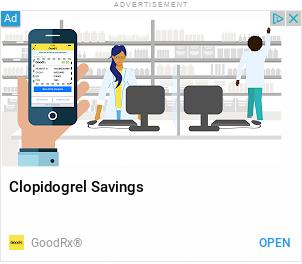 | 3.30 | | unclear | 0.600 | | boring | 0.300 | | simple | 0.300 | | bad_design | 0.200 | | like_product | 0.200 | | trustworthy | 0.200 | | useful | 0.200 | | entertaining | 0.100 | | good_design | 0.100 |
| - Medical Services and Prescriptions
| | | - Not everyone will understand the drug name, making it unclear what the ad is for
- Is this for GoodRX? Or for some drug I’ve never heard of?
|
| 1468348 | 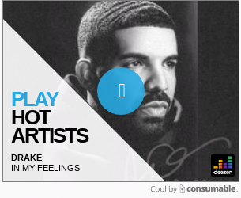 | 3.70 | | good_design | 0.600 | | simple | 0.600 | | boring | 0.400 | | dislike_product | 0.400 | | entertaining | 0.200 | | deceptive | 0.100 | | distasteful | 0.100 | | like_product | 0.100 | | manipulative | 0.100 | | politicized | 0.100 | | unclear | 0.100 |
| | | | - i like that song but why would i want an advert to pop up to tell me to listen to music . and i doubt i can just hear that song had i clicked on it
- I don't like Drake.
- No
|
| 1468539 | | 3.40 | | boring | 0.600 | | bad_design | 0.500 | | simple | 0.500 | | dislike_product | 0.200 | | unclear | 0.200 | | trustworthy | 0.100 |
| | | | - Pipette is a funny word and I am a simple man.
|
| 1468745 | | 3.80 | | simple | 0.300 | | unclear | 0.300 | | bad_design | 0.200 | | boring | 0.200 | | useful | 0.200 | | deceptive | 0.100 | | dislike_product | 0.100 | | like_product | 0.100 | | politicized | 0.100 | | trustworthy | 0.100 |
| | | | - It looks like propaganda
- I've just gotten to the point where I simply do not trust new urls that are not .edu or .gov and are not vouched for by a friend, honestly. Part of my brain still thinks "that site may have malicious Javascript"
- The ad doesn't really make sense to me.
|
| 1468756 | | 2.50 | | boring | 0.600 | | bad_design | 0.400 | | unclear | 0.400 | | clickbait | 0.300 | | dislike_product | 0.300 | | good_design | 0.200 | | simple | 0.200 | | deceptive | 0.100 | | distasteful | 0.100 | | manipulative | 0.100 |
| | | | - I tend to forget trails and end up having to pay them anyway.
|
| 1468805 | | 3.40 | | bad_design | 0.400 | | unclear | 0.400 | | good_design | 0.300 | | like_product | 0.300 | | useful | 0.300 | | simple | 0.200 | | boring | 0.100 | | clickbait | 0.100 | | deceptive | 0.100 | | dislike_product | 0.100 | | entertaining | 0.100 |
| | | | - I couldn’t see what the advertising was for, it was so cluttered and the letters were so small. But I like the community.
- The location looks beautiful!
- There's just too much information and text on the ad.
|
| 1469144 | | 3.90 | | unclear | 0.400 | | boring | 0.300 | | good_design | 0.300 | | simple | 0.300 | | useful | 0.200 | | bad_design | 0.100 | | deceptive | 0.100 | | dislike_product | 0.100 | | like_product | 0.100 | | trustworthy | 0.100 |
| | | | - same reason as all the others. This type of ad running leave user open to malware.
- no
- No I do not understand what this ad is for
|
| 1469273 | 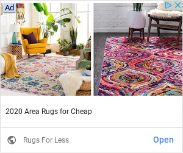 | 4.20 | | bad_design | 0.400 | | boring | 0.400 | | clickbait | 0.400 | | good_design | 0.400 | | simple | 0.400 | | dislike_product | 0.200 | | entertaining | 0.200 | | like_product | 0.200 | | unclear | 0.100 |
| | | | - It really bothers me that there's no sample of pricing or something. "For less" and "For Cheap" are just super vague.
|
| 1469347 | | 4.00 | | simple | 0.500 | | boring | 0.400 | | clickbait | 0.200 | | dislike_product | 0.200 | | like_product | 0.200 | | unclear | 0.200 | | useful | 0.100 |
| | | | - no traveling right now
- Top of the logo blends into the background.
|
| 1469565 | | 4.15 | | boring | 0.538 | | simple | 0.385 | | dislike_product | 0.231 | | trustworthy | 0.231 | | bad_design | 0.154 | | like_product | 0.154 | | useful | 0.154 | | good_design | 0.0769 | | unclear | 0.0769 |
| | | | - A neither dislike or like this ad. It’s vanilla.
- Sounds legit but not a useful product for me
|
| 1469567 | | 3.80 | | boring | 0.500 | | simple | 0.400 | | bad_design | 0.200 | | clickbait | 0.200 | | deceptive | 0.200 | | dislike_product | 0.200 | | good_design | 0.200 | | like_product | 0.100 | | trustworthy | 0.100 | | unclear | 0.100 |
| | | | |
| 1469656 | 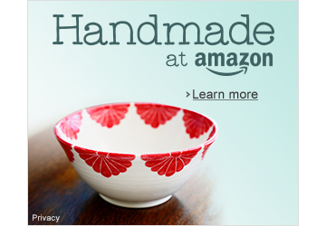 | 4.60 | | good_design | 0.600 | | dislike_product | 0.400 | | simple | 0.400 | | boring | 0.200 | | deceptive | 0.200 | | distasteful | 0.100 | | like_product | 0.100 | | manipulative | 0.100 | | unclear | 0.100 | | useful | 0.100 |
| | | | - Beautiful colors, but I dislike Amazon
|
| 1469715 | 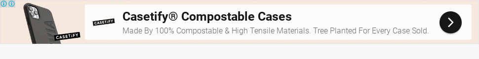 | 4.10 | | simple | 0.500 | | like_product | 0.400 | | bad_design | 0.200 | | boring | 0.200 | | dislike_product | 0.200 | | good_design | 0.200 | | manipulative | 0.100 | | politicized | 0.100 | | unclear | 0.100 | | useful | 0.100 |
| | | | - I like being green and I like phone covers.
- Looks like an ad for biodegradable cell phone cases. Seriously? Stupid idea. Way too "politically correct." I don't have a fancy, expensive cell phone and I do not use a case, so this is not of interest to me at all.
|
| 1469745 | 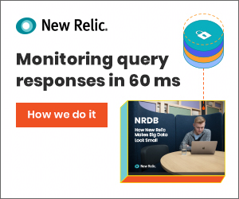 | 3.75 | | boring | 0.417 | | unclear | 0.417 | | simple | 0.333 | | good_design | 0.250 | | dislike_product | 0.167 | | like_product | 0.167 | | bad_design | 0.0833 | | entertaining | 0.0833 | | trustworthy | 0.0833 | | useful | 0.0833 |
| | | | |
| 1469781 | | 3.80 | | boring | 0.400 | | simple | 0.400 | | unclear | 0.400 | | dislike_product | 0.300 | | bad_design | 0.200 | | clickbait | 0.200 | | good_design | 0.200 | | deceptive | 0.100 |
| | | | |
| 1469969 | | 4.30 | | simple | 0.500 | | boring | 0.400 | | unclear | 0.300 | | bad_design | 0.200 | | good_design | 0.200 | | like_product | 0.200 | | trustworthy | 0.200 | | useful | 0.200 | | distasteful | 0.100 |
| | | | |
| 1470185 | | 4.40 | | simple | 0.700 | | boring | 0.300 | | dislike_product | 0.300 | | good_design | 0.300 | | useful | 0.300 | | unclear | 0.200 | | bad_design | 0.100 | | manipulative | 0.100 | | politicized | 0.100 | | trustworthy | 0.100 |
| | | | - In a quick glance I have no idea what this is.
|
| 1470790 | | 4.18 | | good_design | 0.455 | | unclear | 0.455 | | simple | 0.364 | | trustworthy | 0.273 | | bad_design | 0.182 | | boring | 0.182 | | entertaining | 0.182 | | clickbait | 0.0909 | | deceptive | 0.0909 | | dislike_product | 0.0909 | | manipulative | 0.0909 |
| | | | - looks to be using using a 3rd party advertising service instead of embedding the ad in the webpage
- I like the add since it sends a positive out look on people becoming active.
- a bit confusing to read
|
| 1470817 | 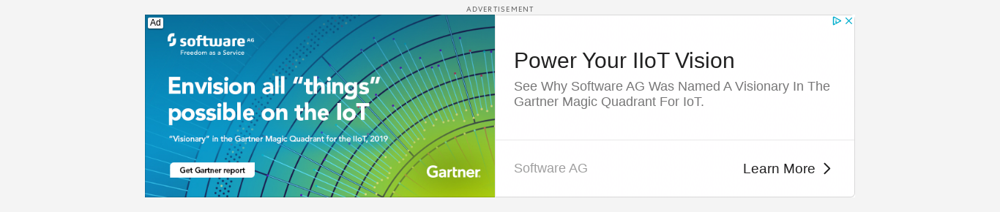 | 3.00 | | unclear | 0.600 | | bad_design | 0.400 | | boring | 0.400 | | good_design | 0.300 | | deceptive | 0.200 | | clickbait | 0.100 | | dislike_product | 0.100 | | trustworthy | 0.100 |
| | | | - Having Gartner in the ad seems to make it more credible but I feel like there's too much going on in the ad.
- I believe it is referencing the internet of things, but what really is the internet of things?
- I don't think so
|
| 1470821 | | 3.70 | | unclear | 0.500 | | bad_design | 0.300 | | boring | 0.300 | | trustworthy | 0.300 | | good_design | 0.200 | | like_product | 0.200 | | simple | 0.200 | | useful | 0.200 | | clickbait | 0.100 | | deceptive | 0.100 | | dislike_product | 0.100 | | manipulative | 0.100 |
| - Public Relations
- Self-Link
| | | - Under the topic of "unclear," I don't know what this is trying to sell, unless it's stock (and even then it's not clear).
- I thought it was the chocolate company at first, I don't like the name of the company.
|
| 1470887 | | 4.30 | | simple | 0.600 | | unclear | 0.500 | | good_design | 0.400 | | boring | 0.200 | | clickbait | 0.100 | | deceptive | 0.100 | | entertaining | 0.100 | | like_product | 0.100 | | manipulative | 0.100 |
| | | | - I also like the design and style of the app.
- Not sure of the source
|
| 1471245 | | 3.70 | | good_design | 0.400 | | unclear | 0.400 | | boring | 0.300 | | simple | 0.300 | | useful | 0.300 | | bad_design | 0.200 | | dislike_product | 0.200 | | entertaining | 0.200 | | trustworthy | 0.200 | | politicized | 0.100 |
| | | | - I don't understand what they're selling
- Seems unclear but it was refreshing to see an ad with people wearing masks
|
| 1471414 | 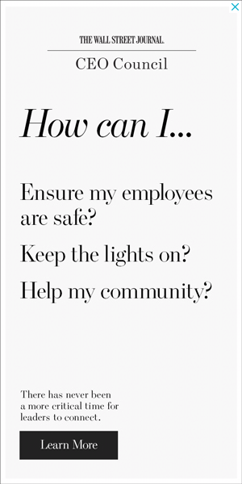 | 3.45 | | unclear | 0.455 | | boring | 0.364 | | clickbait | 0.364 | | dislike_product | 0.364 | | simple | 0.364 | | good_design | 0.273 | | bad_design | 0.0909 | | entertaining | 0.0909 | | like_product | 0.0909 | | politicized | 0.0909 | | trustworthy | 0.0909 | | useful | 0.0909 |
| | | | - I am not sure what the product advertised is, besides something for leaders to connect.
- I don't know that I would recognize this as advertising (versus regular WSJ content).
|
| 1471419 | | 3.80 | | simple | 0.600 | | unclear | 0.500 | | boring | 0.400 | | bad_design | 0.200 | | clickbait | 0.200 | | good_design | 0.200 | | like_product | 0.200 | | useful | 0.100 |
| | | | - I have no idea what this ad is getting at. A jumbled mess.
|
| 1471431 | 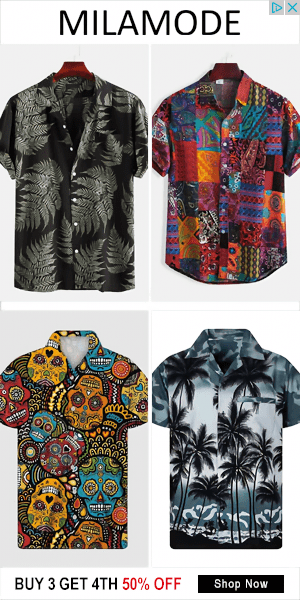 | 4.00 | | bad_design | 0.400 | | boring | 0.400 | | good_design | 0.400 | | dislike_product | 0.300 | | simple | 0.300 | | useful | 0.200 | | deceptive | 0.100 | | like_product | 0.100 |
| | | | - Cool shirts. Ad is not pushy.
|
| 1471520 | 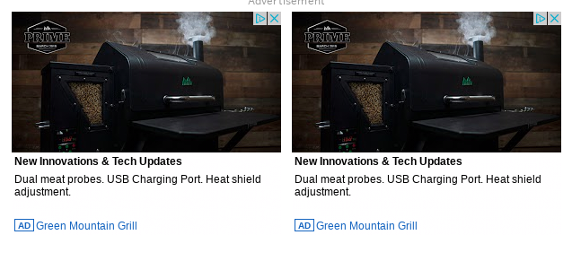 | 3.70 | | boring | 0.500 | | bad_design | 0.300 | | dislike_product | 0.200 | | entertaining | 0.200 | | like_product | 0.200 | | simple | 0.200 | | unclear | 0.200 | | useful | 0.200 | | manipulative | 0.100 |
| | | | - The design of this app doesn't attract my attention.
|
| 1471755 | 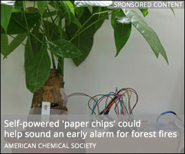 | 3.90 | | unclear | 0.500 | | simple | 0.300 | | bad_design | 0.200 | | boring | 0.200 | | clickbait | 0.200 | | good_design | 0.200 | | like_product | 0.200 | | entertaining | 0.100 | | manipulative | 0.100 | | useful | 0.100 |
| | | | - The picture on the ad doesn't seem to correlate with the caption at first glance. It's just a plant with some wiring on it, which is somewhat intriguing, but not enough for me to click on it. The phrase "paper chips" is also unclear.
|
| 1472114 | | 4.40 | | unclear | 0.500 | | good_design | 0.400 | | simple | 0.300 | | trustworthy | 0.200 | | boring | 0.100 | | clickbait | 0.100 | | entertaining | 0.100 | | useful | 0.100 |
| - Journalism
- Religious
- Self-Link
| | | - none
- I don't know what they are advertising
|
| 1472124 | | 3.90 | | boring | 0.400 | | good_design | 0.400 | | simple | 0.400 | | useful | 0.300 | | trustworthy | 0.200 | | unclear | 0.200 | | bad_design | 0.100 | | distasteful | 0.100 | | manipulative | 0.100 | | politicized | 0.100 |
| | | | |
| 1472231 | | 4.30 | | useful | 0.500 | | bad_design | 0.400 | | boring | 0.300 | | dislike_product | 0.300 | | good_design | 0.200 | | clickbait | 0.100 | | like_product | 0.100 | | simple | 0.100 | | trustworthy | 0.100 | | unclear | 0.100 |
| | | | - Too much information is crammed into a small, unreadable space.
- I think that this looks really cluttered because is trying to offer a lot of information in a tiny space.
- Too much information on it and it might turn people away
- Sounds overpriced
|
| 1472265 | | 4.80 | | simple | 0.800 | | good_design | 0.400 | | boring | 0.300 | | trustworthy | 0.300 | | unclear | 0.200 | | bad_design | 0.100 | | clickbait | 0.100 | | deceptive | 0.100 | | dislike_product | 0.100 | | manipulative | 0.100 | | politicized | 0.100 | | useful | 0.100 |
| - Banking/Credit Cards
- Public Relations
| | | - Simple design that is calm to look at.
- No
|
| 1472295 | | 3.60 | | bad_design | 0.500 | | boring | 0.500 | | simple | 0.500 | | trustworthy | 0.300 | | unclear | 0.300 | | useful | 0.300 | | dislike_product | 0.200 | | like_product | 0.200 |
| | | | - Too much words and numbers scrunched up in one small image
|
| 1472484 | 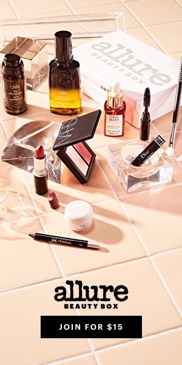 | 4.50 | | simple | 0.500 | | boring | 0.400 | | good_design | 0.400 | | dislike_product | 0.200 | | unclear | 0.200 | | clickbait | 0.100 | | deceptive | 0.100 | | entertaining | 0.100 | | like_product | 0.100 |
| | | | - i don't wear makeup so not an ad that pulls me in
- You get an idea of the types of products this brand sells.
- The picture could be way more interesting.
|
| 1473002 | | 4.10 | | good_design | 0.500 | | boring | 0.300 | | simple | 0.200 | | trustworthy | 0.200 | | unclear | 0.200 | | bad_design | 0.100 | | clickbait | 0.100 | | dislike_product | 0.100 | | distasteful | 0.100 | | entertaining | 0.100 |
| | | | |
| 1473546 | | 4.30 | | simple | 0.500 | | boring | 0.400 | | manipulative | 0.300 | | dislike_product | 0.200 | | good_design | 0.200 | | clickbait | 0.100 | | entertaining | 0.100 | | like_product | 0.100 | | unclear | 0.100 | | useful | 0.100 |
| - Games and Toys
- Journalism
- Self-Link
| | | |
| 1473601 | | 3.40 | | unclear | 0.400 | | bad_design | 0.300 | | boring | 0.300 | | like_product | 0.200 | | simple | 0.200 | | useful | 0.200 | | clickbait | 0.100 | | deceptive | 0.100 | | distasteful | 0.100 | | entertaining | 0.100 | | good_design | 0.100 | | politicized | 0.100 | | trustworthy | 0.100 |
| - Scientific Journal
- Self-Link
| | | - It looks like it's incomplete because there's just a black box above some words
|
| 1473958 | | 3.90 | | simple | 0.500 | | boring | 0.400 | | good_design | 0.400 | | bad_design | 0.200 | | dislike_product | 0.200 | | unclear | 0.200 | | clickbait | 0.100 | | deceptive | 0.100 | | entertaining | 0.100 | | like_product | 0.100 |
| | | | - Pretty bland and not a lot of detail about what it exactly the content is.
- it has cool design.
|
| 1474351 | | 3.70 | | boring | 0.400 | | simple | 0.300 | | unclear | 0.300 | | dislike_product | 0.200 | | good_design | 0.200 | | bad_design | 0.100 | | clickbait | 0.100 | | like_product | 0.100 | | manipulative | 0.100 | | politicized | 0.100 | | trustworthy | 0.100 | | useful | 0.100 |
| | | | - I can't tell what this advertisement is actually trying to sell.
- I never trust these, because I believe they are usually clickbait.
|
| 1474819 | | 4.10 | | simple | 0.500 | | boring | 0.300 | | good_design | 0.300 | | like_product | 0.300 | | bad_design | 0.100 | | clickbait | 0.100 | | deceptive | 0.100 | | distasteful | 0.100 | | entertaining | 0.100 | | trustworthy | 0.100 | | unclear | 0.100 | | useful | 0.100 |
| | | | |
| 1474920 | | 4.20 | | simple | 0.500 | | boring | 0.300 | | dislike_product | 0.300 | | good_design | 0.300 | | unclear | 0.300 | | manipulative | 0.200 | | trustworthy | 0.200 | | useful | 0.200 | | bad_design | 0.100 | | politicized | 0.100 |
| | | | - In terms of liking or disliking, I'm mostly neutral about this ad. It doesn't irritate/annoy me in any way, but it also doesn't interest me.
- Looks like a trustworthy guy.
|
| 1475479 | | 3.10 | | boring | 0.600 | | simple | 0.300 | | bad_design | 0.200 | | clickbait | 0.200 | | dislike_product | 0.200 | | deceptive | 0.100 | | entertaining | 0.100 | | good_design | 0.100 | | manipulative | 0.100 | | useful | 0.100 |
| | | | |
| 1475583 | 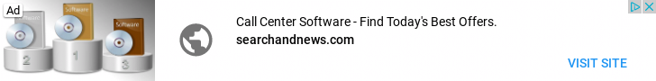 | 3.45 | | boring | 0.455 | | dislike_product | 0.455 | | simple | 0.364 | | bad_design | 0.182 | | deceptive | 0.182 | | distasteful | 0.182 | | unclear | 0.182 | | clickbait | 0.0909 | | good_design | 0.0909 | | like_product | 0.0909 | | trustworthy | 0.0909 | | useful | 0.0909 |
| | | | |
| 1476202 | | 3.18 | | boring | 0.636 | | dislike_product | 0.364 | | simple | 0.364 | | unclear | 0.273 | | bad_design | 0.182 | | good_design | 0.182 | | clickbait | 0.0909 | | deceptive | 0.0909 | | manipulative | 0.0909 | | trustworthy | 0.0909 | | useful | 0.0909 |
| | | | |
| 1476550 | | 3.45 | | simple | 0.545 | | bad_design | 0.364 | | boring | 0.364 | | dislike_product | 0.182 | | useful | 0.182 | | deceptive | 0.0909 | | entertaining | 0.0909 | | good_design | 0.0909 | | like_product | 0.0909 | | manipulative | 0.0909 | | unclear | 0.0909 |
| | | | |
| 1476767 | | 4.00 | | simple | 0.500 | | boring | 0.300 | | manipulative | 0.300 | | bad_design | 0.200 | | dislike_product | 0.200 | | like_product | 0.200 | | clickbait | 0.100 | | deceptive | 0.100 | | good_design | 0.100 | | trustworthy | 0.100 | | unclear | 0.100 | | useful | 0.100 |
| | | | - popping up in the middle is annoying
- It's for a good cause, not trying to sell me something.
|
| 1477921 | | 4.10 | | simple | 0.500 | | boring | 0.300 | | dislike_product | 0.300 | | useful | 0.300 | | bad_design | 0.200 | | good_design | 0.200 | | manipulative | 0.100 | | trustworthy | 0.100 |
| | | | - The stock photos!!! Yikes!!! So generic.
|
| 1477932 | 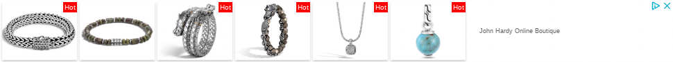 | 3.70 | | bad_design | 0.500 | | simple | 0.500 | | boring | 0.400 | | dislike_product | 0.300 | | good_design | 0.300 | | like_product | 0.300 | | clickbait | 0.200 | | manipulative | 0.100 | | unclear | 0.100 | | useful | 0.100 |
| | | | |
| 1477962 | | 3.18 | | unclear | 0.545 | | bad_design | 0.364 | | good_design | 0.364 | | boring | 0.273 | | simple | 0.273 | | useful | 0.182 | | clickbait | 0.0909 | | dislike_product | 0.0909 | | distasteful | 0.0909 | | entertaining | 0.0909 | | manipulative | 0.0909 |
| | | | |
| 1478334 | | 3.20 | | unclear | 0.500 | | boring | 0.400 | | good_design | 0.300 | | bad_design | 0.200 | | clickbait | 0.200 | | dislike_product | 0.200 | | simple | 0.200 | | entertaining | 0.100 | | manipulative | 0.100 | | useful | 0.100 |
| | | | - I don't no what it means by eliminate silos.
|
| 1478943 | | 3.80 | | boring | 0.400 | | unclear | 0.400 | | good_design | 0.300 | | simple | 0.300 | | clickbait | 0.200 | | distasteful | 0.100 | | trustworthy | 0.100 | | useful | 0.100 |
| | | | |
| 1479139 | 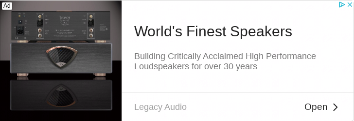 | 3.91 | | simple | 0.636 | | boring | 0.364 | | good_design | 0.364 | | bad_design | 0.273 | | clickbait | 0.182 | | dislike_product | 0.182 | | like_product | 0.182 | | useful | 0.182 | | deceptive | 0.0909 | | trustworthy | 0.0909 | | unclear | 0.0909 |
| | | | |
| 1479187 | | 4.55 | | simple | 0.455 | | unclear | 0.455 | | trustworthy | 0.273 | | boring | 0.182 | | like_product | 0.182 | | useful | 0.182 | | bad_design | 0.0909 | | clickbait | 0.0909 | | dislike_product | 0.0909 | | entertaining | 0.0909 | | good_design | 0.0909 |
| | | | - Are they selling boots? What is that gray thing? It isn't clear. I mean, I'm 95% positive that WeatherTech is for car floors, but this ad doesn't tell you much of anything while trying to look good.
|
| 1479903 | | 4.00 | | boring | 0.300 | | entertaining | 0.300 | | good_design | 0.300 | | manipulative | 0.300 | | unclear | 0.300 | | dislike_product | 0.200 | | simple | 0.200 | | bad_design | 0.100 | | clickbait | 0.100 | | like_product | 0.100 | | useful | 0.100 |
| | | | |
| 1479939 | 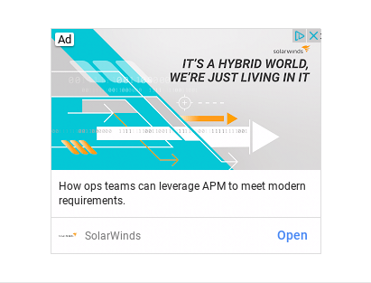 | 3.90 | | good_design | 0.600 | | simple | 0.600 | | boring | 0.500 | | unclear | 0.400 | | dislike_product | 0.200 | | trustworthy | 0.200 | | bad_design | 0.100 | | clickbait | 0.100 | | entertaining | 0.100 | | like_product | 0.100 | | useful | 0.100 |
| | | | - No not really.
- The graphic is confusing
|
| 1480523 | 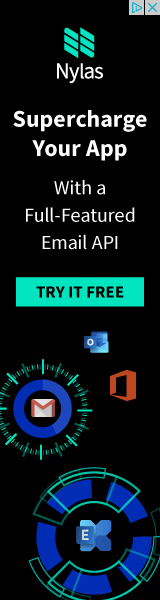 | 3.55 | | unclear | 0.545 | | bad_design | 0.364 | | boring | 0.364 | | good_design | 0.364 | | simple | 0.364 | | dislike_product | 0.273 | | clickbait | 0.182 | | useful | 0.182 | | deceptive | 0.0909 | | entertaining | 0.0909 | | like_product | 0.0909 | | manipulative | 0.0909 | | trustworthy | 0.0909 |
| | | | |
| 1480527 | 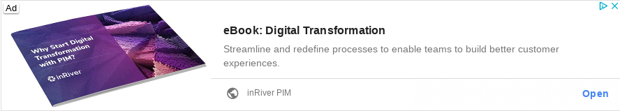 | 4.00 | | boring | 0.500 | | bad_design | 0.400 | | simple | 0.400 | | dislike_product | 0.200 | | good_design | 0.200 | | like_product | 0.200 | | trustworthy | 0.100 | | unclear | 0.100 | | useful | 0.100 |
| | | | - It's hard to read what's written on the book within the ad.
|
| 1480552 | 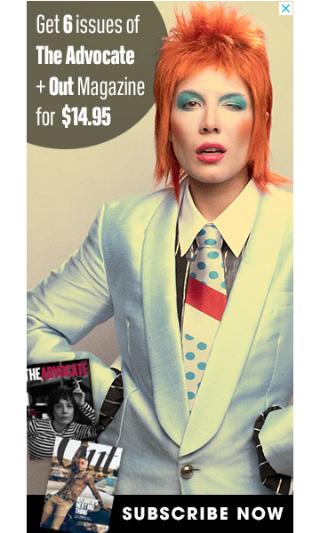 | 4.30 | | dislike_product | 0.400 | | good_design | 0.300 | | bad_design | 0.200 | | like_product | 0.200 | | simple | 0.200 | | boring | 0.100 | | distasteful | 0.100 | | entertaining | 0.100 | | manipulative | 0.100 | | trustworthy | 0.100 | | useful | 0.100 |
| | | | - The heavy, colorful makeup and hair on the person initially catches my eye, but makes me a little uncomfortable after getting a better look at it. Magazines are not something I read or even glance at, so I am uninterested
- I have no interest
|
| 1480771 | | 4.10 | | simple | 0.700 | | boring | 0.500 | | bad_design | 0.300 | | like_product | 0.200 | | clickbait | 0.100 | | dislike_product | 0.100 | | good_design | 0.100 | | trustworthy | 0.100 | | unclear | 0.100 |
| | | | - No images to associate with the ad.
|
| 1480867 | | 3.27 | | unclear | 0.545 | | bad_design | 0.455 | | boring | 0.455 | | dislike_product | 0.182 | | good_design | 0.182 | | trustworthy | 0.182 | | entertaining | 0.0909 | | manipulative | 0.0909 | | simple | 0.0909 |
| | | | |